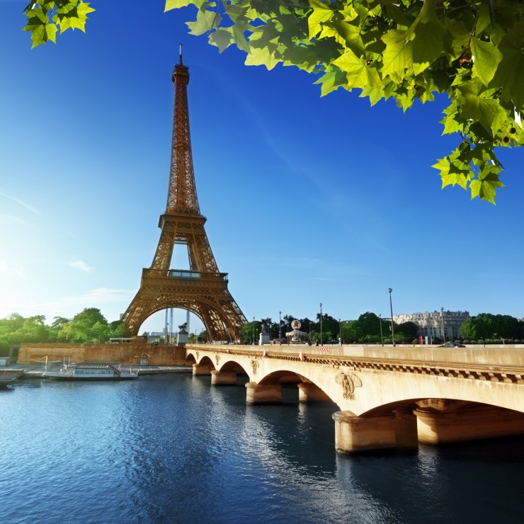
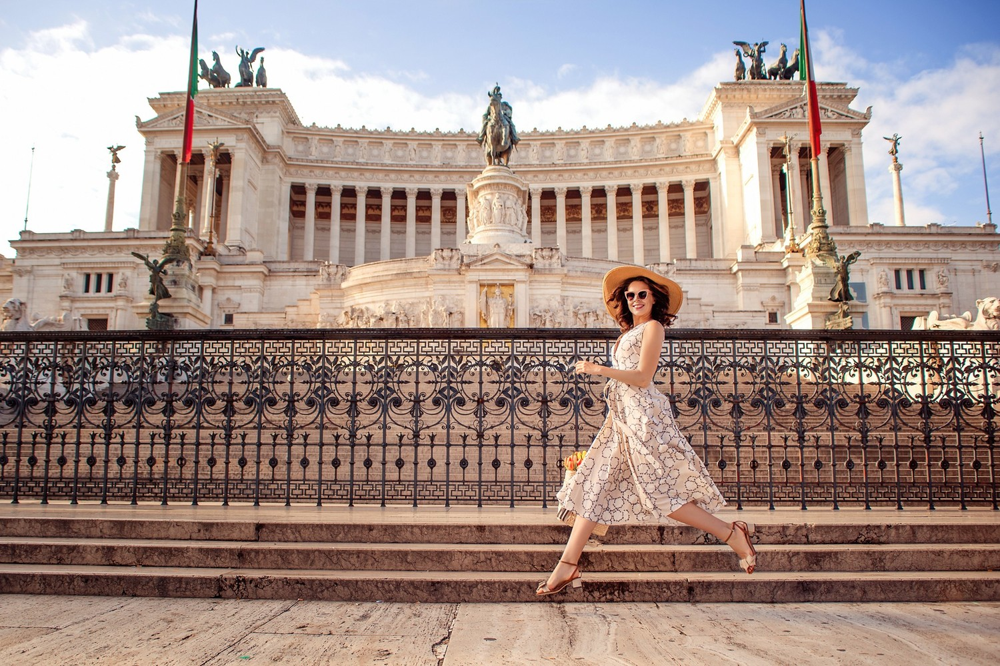
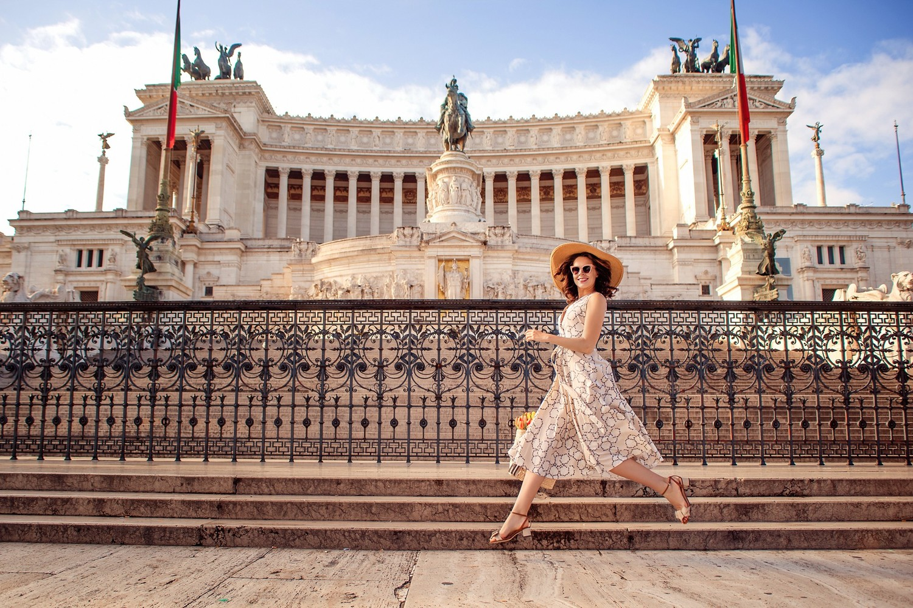

-

Париж
Париж - однозначна перлина Європи, що приваблює мандрівників своєю безсмертною красою та неперевершеним шармом. Це місто віддзеркалює елегантність та розкіш, таємниці та творчість. Зануритися в його неповторну атмосферу, розглядаючи видатні пам'ятки, - один з кращих варіантів для знайомства з найромантичнішою столицею світу.
-
 

Рим
Рим варто відвідати через його унікальну історію та архітектурні шедеври, як-от Колізей, Пантеон і Ватикан. Місто вражає поєднанням античної спадщини, мистецтва та італійської кухні, створюючи незабутню атмосферу для кожного відвідувача. Рим також славиться своїми затишними площами, як-от Площа Навона, і чарівними вузькими вуличками, де можна відчути справжню італійську гостинність. Тут кожен куточок наповнений історією, а фонтан Треві, до якого мандрівники кидають монетки, обіцяє повернення в це чарівне місто.
-

Барселона
Барселона приваблює своїм унікальним поєднанням готичної архітектури та сучасного мистецтва, зокрема творіннями Антоніо Гауді, як-от Саграда Фамілія та Парк Гуель. Місто також відоме своїми широкими пляжами, гастрономією та живою атмосферою, що робить його ідеальним місцем для відпочинку і культурного занурення.